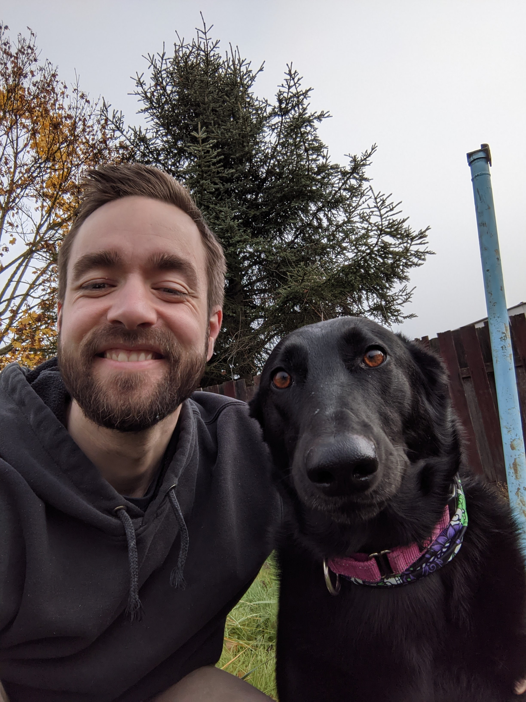

<div class="horiz-center">
<div class="horiz">
    
    <div class>
        <div class="bio">
            My name is Kyle Esquerra. I'm currently a master's student in Computer Science at
            Portland State, with a Bachelor's of Science in Computer Science and a Certificate
            in Cybersecurity from Oregon State. I was previously a United States Marine
            serving as a Geospatial Intelligence Specialist where I was awarded a
            Navy Commendation Medal for my performance as the sole Geospatial Intelligence
            Specialist in Afghanistan.
        </div>
        <div class="bio">
            My primary interests in the computer science field are low-level programming,
            network communications, machine learning, artificial intelligence and 
            programming languages. I'm interested in all aspects of computer science, and 
            always willing to learn anything related!
        </div>
    </div>
</div>
